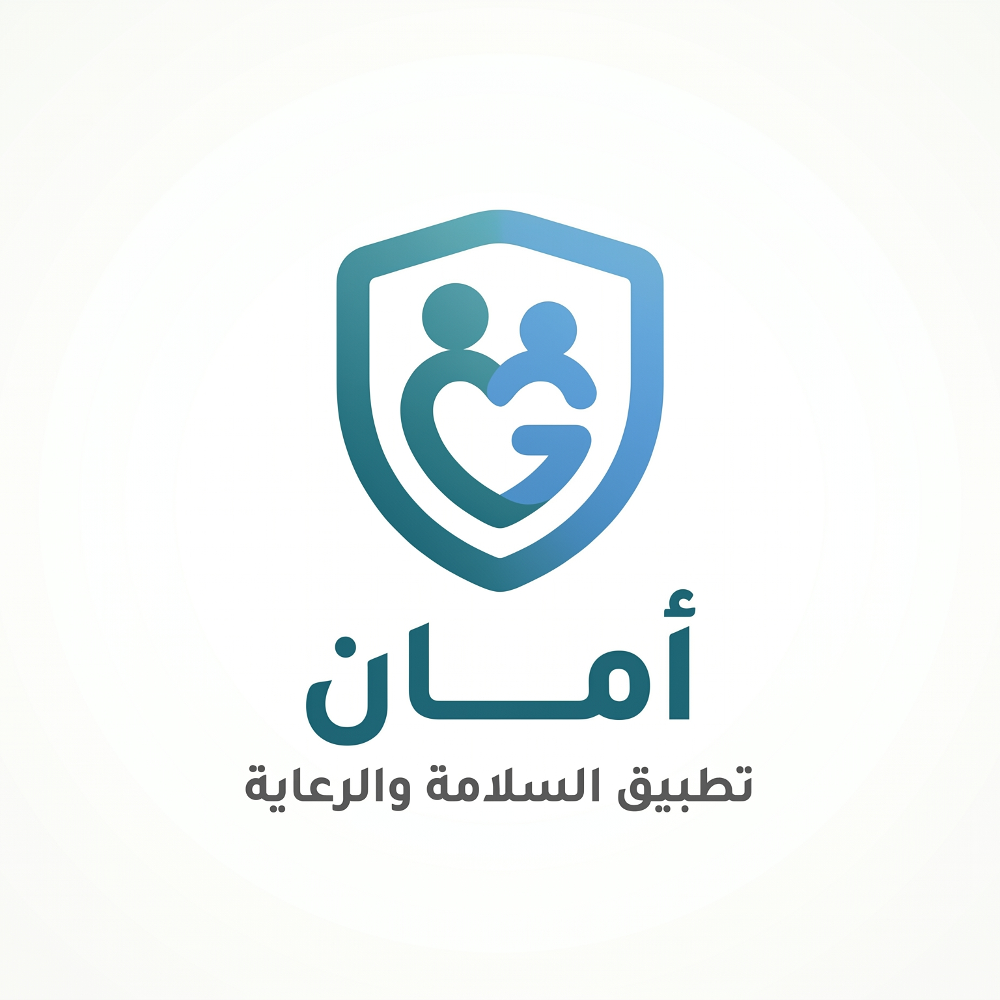

بإشراف عبدالله أحمد طارق
أنا عبدالله احمد طارق، قمت بتطوير هذا التطبيق لخدمة وطني العراق. تم جمع المعلومات من مصادر طبية وأمنية رسمية لضمان دقتها وسرعة الاستجابة في لحظات الخطر.
اتبعني على انستكرام لرؤية تحديثات مستقبلية على التطبيق أو تطبيقات أخرى:
📸 انستكرام: @aat_962